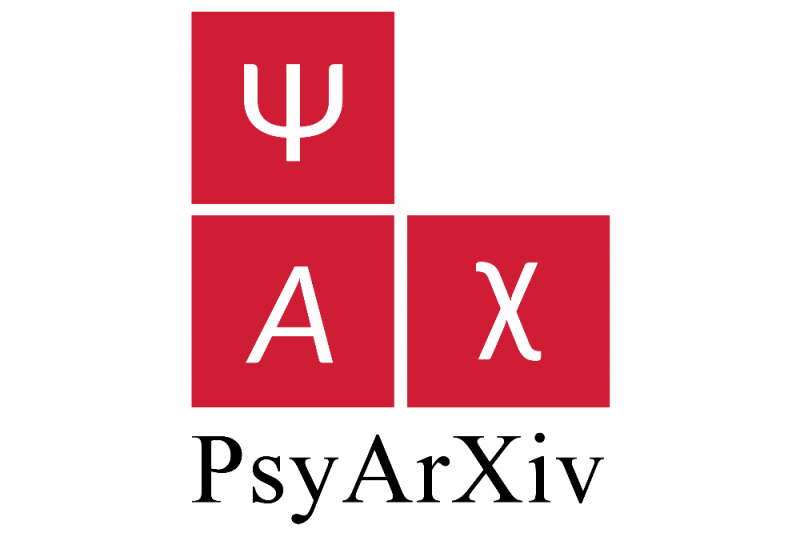

Takano, R., & Nomura, M. (2024).
Relationships between right-wing authoritarianism and spirituality in Japan.
Psychology of Religion and Spirituality, 16(1), 34–42.
https://doi.org/10.1037/rel0000462 
Takano, R., & Taoka, D. (2024).
Relationships between meaning in life and positive and negative spirituality in a field setting in Japan.
Journal of Religion and Health, 63, 224–237. https://doi.org/10.1007/s10943-023-01891-8
Takano, R., & Nomura, M. (2023).
A closer look at the time course of bodily responses to awe experiences.
Scientific Reports, 13, 22506.
https://doi.org/10.1038/s41598-023-49681-2
Takano, R., Matsuo, A., & Kawano, K. (2023).
Development of a Japanese version of the Awe Experience Scale (AWE-S): A structural topic modeling approach.
F1000Research, 12, 515.
https://doi.org/10.12688/f1000research.134275.2
Takano, R., & Nomura, M. (2023).
Strengthened social ties in disasters: Threat-awe encourages interdependent worldviews via powerlessness.
PLoS ONE, 18(4), e0285049.
https://doi.org/10.1371/journal.pone.0285049
Takano, R., & Nomura, M. (2022).
Neural representations of awe: Distinguishing common and distinct neural mechanisms.
Emotion, 22(4), 669–677.
https://doi.org/10.1037/emo0000771
Takano, R., & Nomura, M. (2019).
Anodal transcranial direct current stimulation of the right temporoparietal junction enhances the self-effacing bias in Japanese individuals.
Culture and Brain, 7, 80–91.
https://doi.org/10.1007/s40167-018-0064-4
高野了太 (訳). 後藤崇志・日道俊之・小宮あすか・楠見孝 (監訳). 未来思考の心理学 予測・計画・達成する心のメカニズム. 北大路書房 (Oettingen, G., Sevincer, A. T., & Gollwitzer, P. (Eds.). (2018). The psychology of thinking about the future. The Guilford Press.).